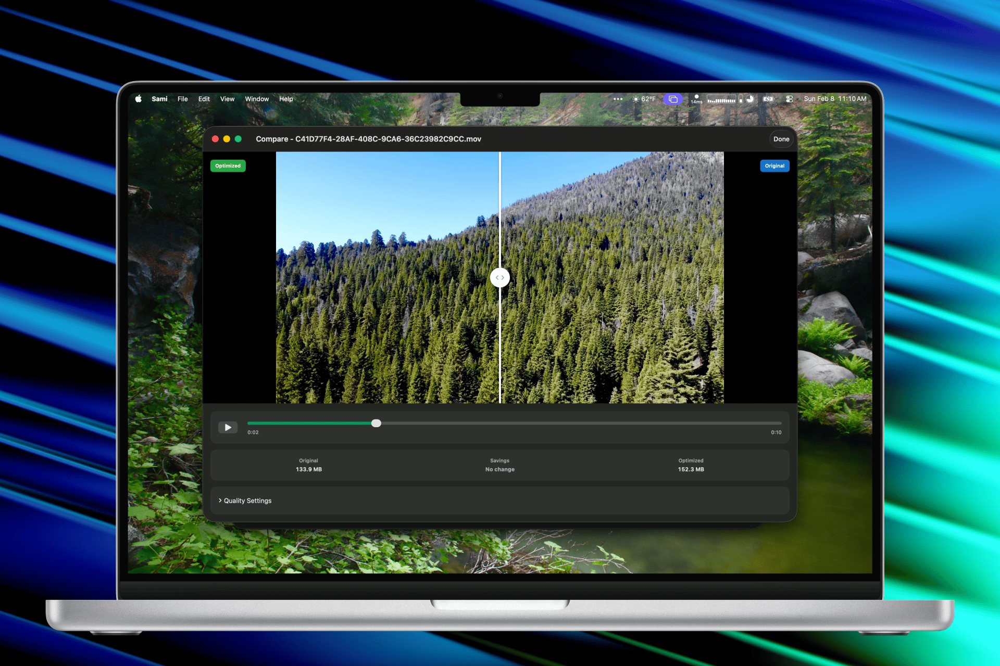
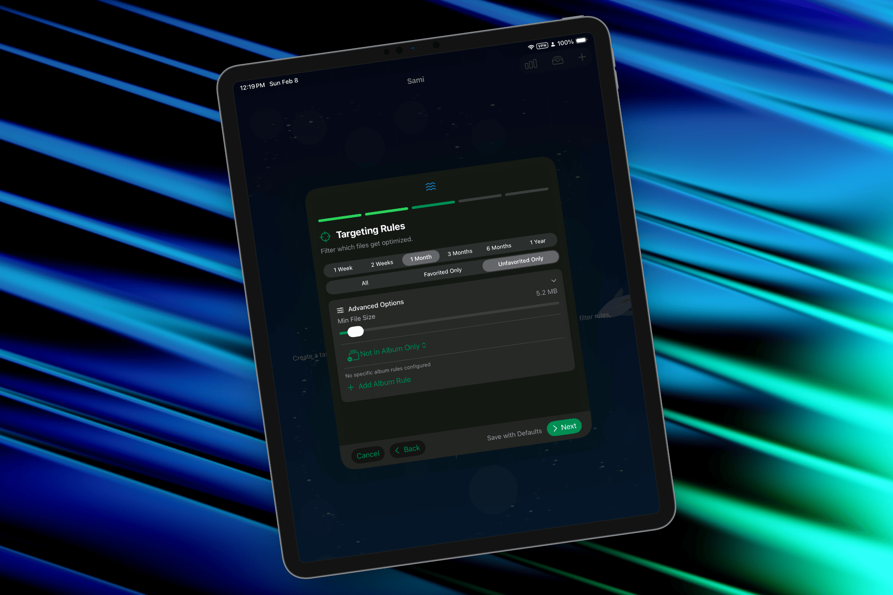
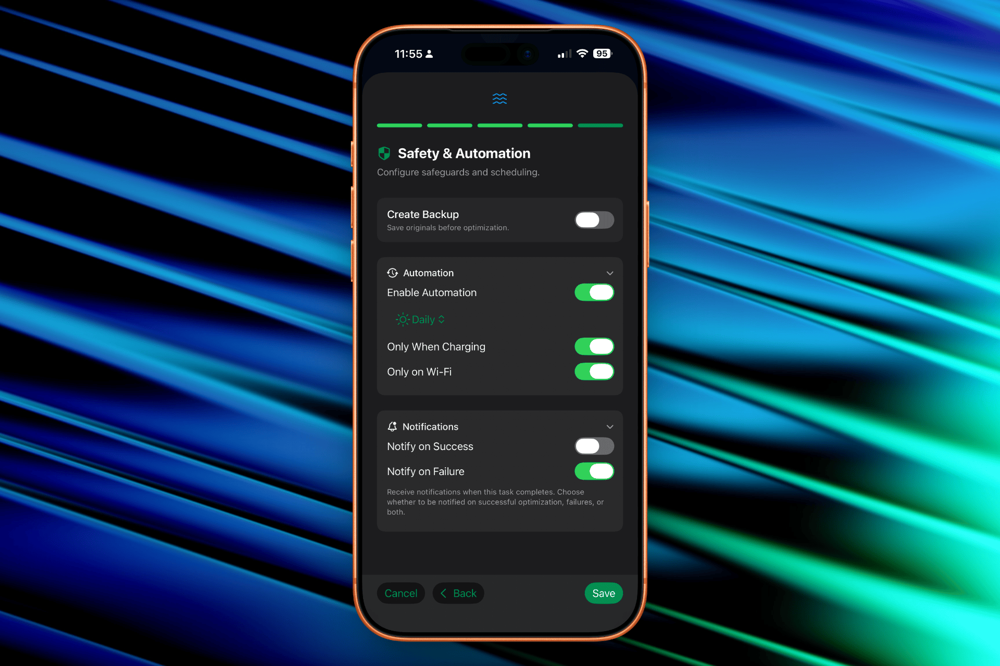
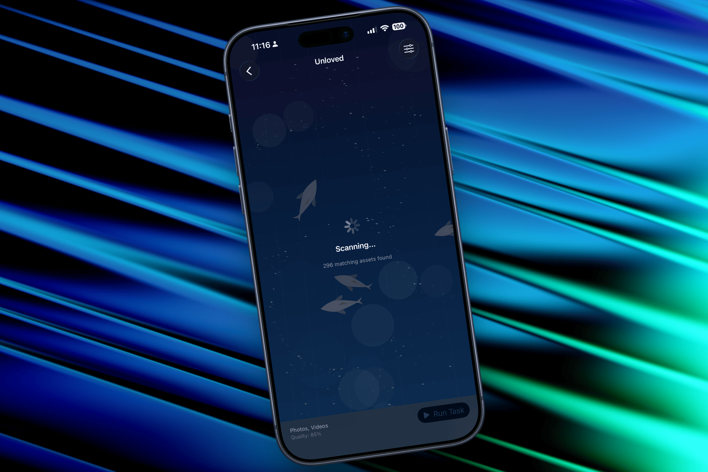
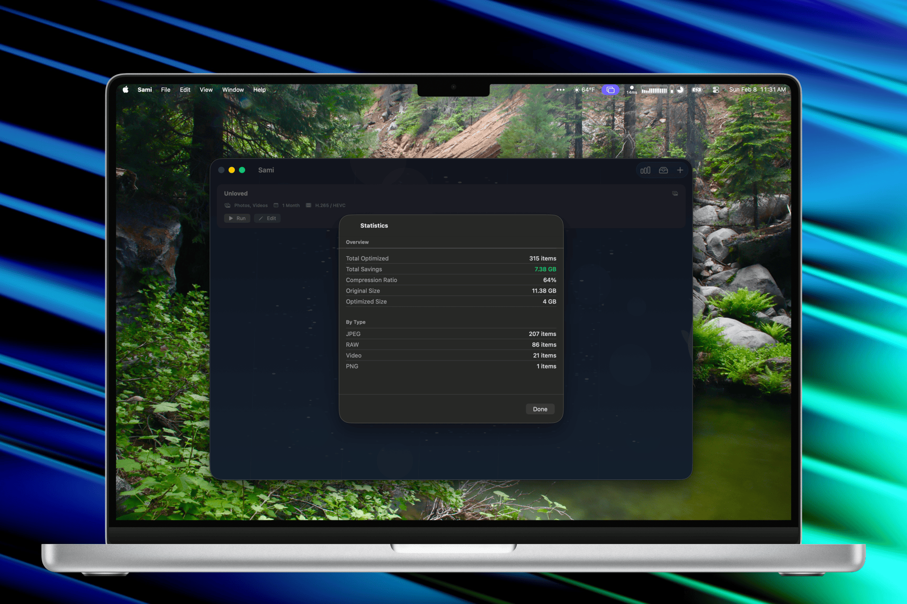
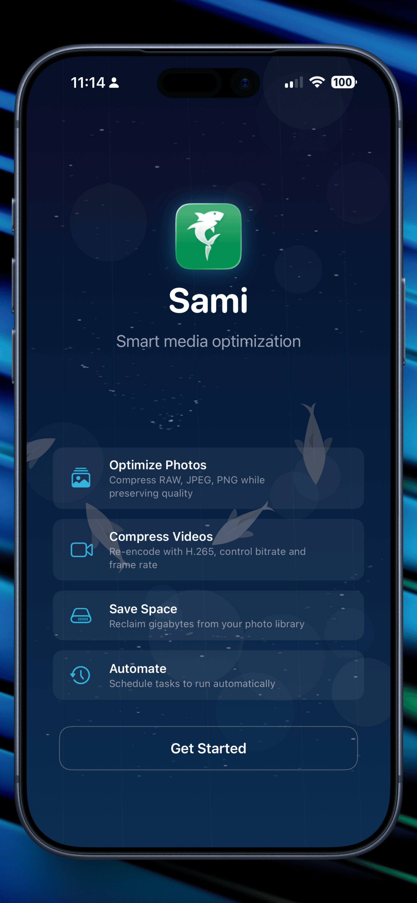
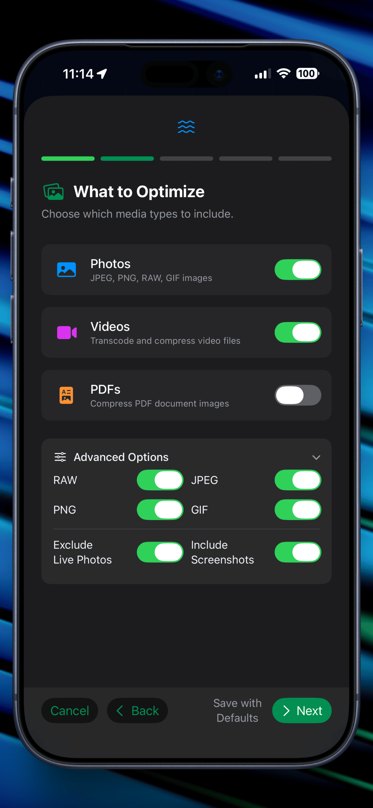
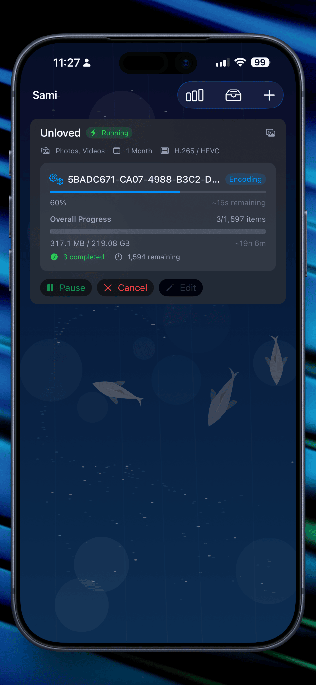
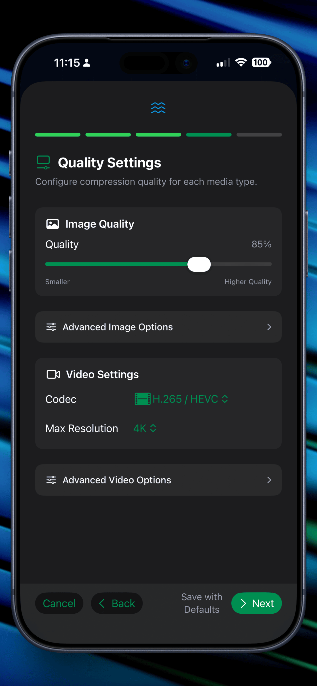

🎨 Sami
Reclaim storage space on your iPhone, iPad, and Mac with intelligent media optimization. Compress photos, videos, and PDFs while previewing every change side-by-side. Set up automated tasks that run on schedule or trigger from Apple Shortcuts.
Why Choose Sami
Intelligent media compression with complete control and transparency
Optimize media directly from your Apple Photos library. Select albums, smart albums, or individual photos and videos to compress and save space.
Choose any folder on your device to optimize. Perfect for managing media in Documents, Downloads, or custom locations with full drag-and-drop support.
Create custom optimization tasks that target exactly the media you want. Set filters, quality levels, and output formats for precise control.
Schedule tasks to run automatically in the background. Trigger optimizations from Apple Shortcuts or set up recurring schedules to keep storage under control.
Preview optimizations before committing. Compare original and compressed versions side-by-side to ensure quality meets your standards.
Enjoy a delightful, playful interface that makes media optimization fun. Clear visualizations and smooth animations guide you through every step.
Not just for photos and videos—Sami optimizes PDFs too. Reduce file sizes of documents while maintaining readability and compatibility.
See exactly how much storage space you'll save before running any optimization. Make informed decisions about quality vs. storage trade-offs.
Simply drag media files into Sami to optimize them. Quick, intuitive file handling makes batch processing a breeze on Mac and iPad.
Trigger optimizations from Shortcuts automations. Integrate Sami into your workflows—optimize photos when you get home, before backups, or on demand.
Perfect for archiving. Optimize media you may not need at full quality but want to keep for reference, freeing up space without losing memories.
One app for iPhone, iPad, and Mac with full feature parity. Start optimization on your Mac and monitor progress on your iPhone—seamlessly.
Sami uses lossy compression to achieve significant space savings. This means there will be some quality loss in the optimized media. The side-by-side preview lets you evaluate if the quality trade-off is acceptable for your needs. Always keep backups of important media before optimization.
Never guess about quality. See exactly how your optimized media will look with side-by-side comparisons. Inspect details before saving. Your photos, your control.
Adjust quality settings in real-time and see immediate previews. When you're happy with the balance between file size and quality, commit the optimization.

Create optimization tasks tailored to your needs. Target specific albums, date ranges, file types, or folders. Set quality levels, output formats, and file size limits for each task.
Run tasks manually, schedule them to run automatically, or trigger them from Apple Shortcuts. Perfect for maintaining a lean photo library without constant manual management.

Set it and forget it. Configure tasks to run on a schedule—daily, weekly, or monthly. Sami works quietly in the background, keeping your storage optimized without you thinking about it.
Integrate with Apple Shortcuts for powerful automation. Optimize photos when you arrive home, before cloud backups, or based on available storage. The possibilities are endless.

Media optimization doesn't have to be boring. Sami features a delightfully fun UI with smooth animations, clear visualizations, and intuitive controls that make managing your media library enjoyable.
Watch your storage savings grow with satisfying progress indicators. See estimated space savings update in real-time as you adjust quality settings. Every interaction feels responsive and polished.

Sami is a universal app for iPhone, iPad, and Mac. One purchase works across all your devices with full feature parity.
Native interfaces tailored to each platform mean you get the complete experience no matter which device you're using.

See It In Action
Take a closer look at Sami in action




Got Questions?
Sami can optimize photos (JPEG, PNG, HEIC), videos (MP4, MOV, and more), and PDF documents. It works with media from your Apple Photos library or any folder you choose on your device.
Yes, Sami uses lossy compression to achieve significant space savings. There will be some quality loss, but the side-by-side preview feature lets you evaluate the quality trade-off before committing. You have full control over compression levels to balance quality vs. file size based on your needs.
Absolutely! Sami's side-by-side comparison feature lets you see exactly how the optimized version will look compared to the original. Inspect details to ensure you're happy with the quality before saving.
Create optimization tasks with specific targets (albums, folders, date ranges) and quality settings. Tasks can run manually, on a schedule (daily, weekly, monthly), or be triggered from Apple Shortcuts for integration with iOS and macOS automation.
Yes! Sami is a universal app that works on iPhone, iPad, and Mac with full feature parity. Purchase once and use it across all your Apple devices.
Savings vary based on your media and chosen quality settings, but typically range from 30-70% for photos and videos. Sami provides estimated savings before you optimize, so you know exactly what to expect. PDFs can often be reduced by 50% or more depending on their content.
Sami can optionally keep reference versions depending on your settings, but you should always maintain your own backups of important media before optimization. The compression is permanent, so backing up originals elsewhere is recommended for files you may want at full quality in the future.
Yes! On Mac and iPad, you can drag and drop media files directly into Sami to optimize them quickly. This makes batch processing large numbers of files fast and intuitive.
Security & Privacy
Comprehensive security audit completed April 2026